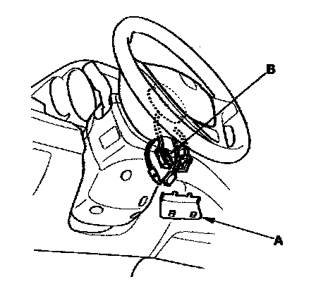
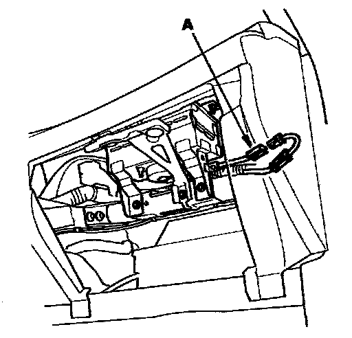
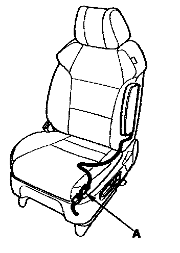
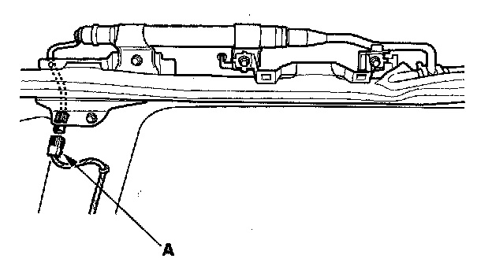
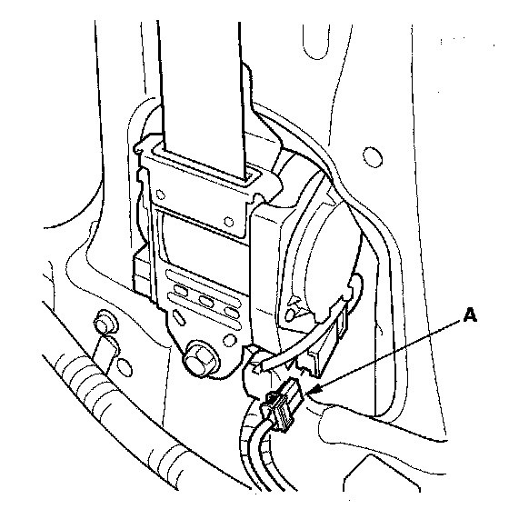
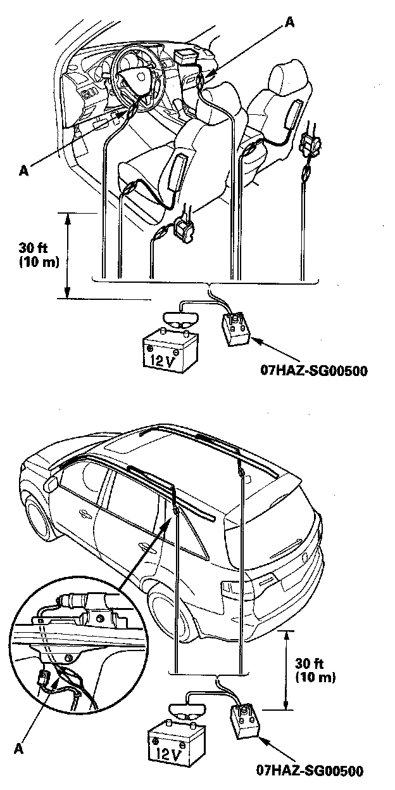
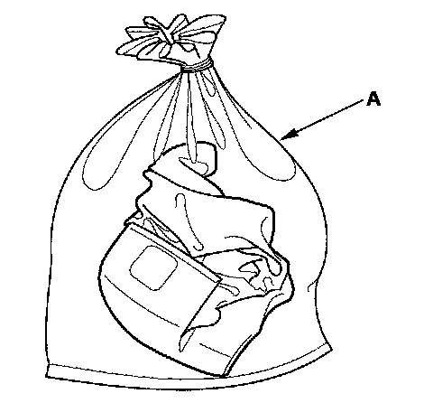
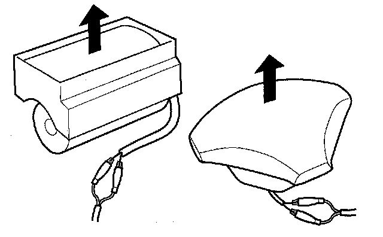

Airbag and Tensioner Disposal
Airbag and Tensioner DisposalSpecial Tools Required
Deployment tool 07HAZ-SG00500
Before scrapping any airbags, side airbags, side curtain airbags, seat belt tensioners, or lap belt tensioner (including those in a whole vehicle to be scrapped), the part(s) must be deployed. If the vehicle is still within the warranty period, the Acura District Parts and Service Manager must give approval and/or special instruction before deploying the part(s). Only after the part(s) have been deployed (as the result of vehicle collision, for example), can they be scrapped.
If the parts appear intact (not deployed), treat them with extreme caution. Follow this procedure.
Deploying Airbags in the Vehicle
If an SRS equipped vehicle is to be entirely scrapped, its airbags, side airbags, side curtain airbags, seat belt tensioners, and lap belt tensioner should be deployed while still in the vehicle. These parts should not be considered as salvageable parts and should never be installed in another vehicle.
1. Turn the ignition switch OFF, then disconnect the negative cable from the battery, and wait at least 3 minutes.
2. Confirm that each airbag, side airbag, side curtain airbag, seat belt tensioner, or lap belt tensioner is securely mounted.
3. Confirm that the deployment tool is functioning properly by following the check procedure on the tool label.
Driver's Airbag

4. Remove the access panel (A) from the steering wheel then disconnect the driver's airbag 4P connector (B) from the cable reel.
Front Passenger's Airbag

5. Remove the glove box, then disconnect the front passenger's airbag 4P connector (A) from the dashboard wire harness.
Side Airbag

6. Disconnect the side airbag 2P connector (A) from the floor wire harness.
Side Curtain Airbag

7. Disconnect the floor wire harness 2P connector (A) from the side curtain airbag.
Seat Belt Tensioner

8. Disconnect the floor wire harness 4P connector (A) from the seat belt tensioner. Pull the seat belt out all the way and cut it.

9. Cut off each connector, and strip the ends of the wires. Twist each pair of unlike colored wires together, and clip an alligator clip (A) from the deployment tool to each pair. Place the deployment tool at least 30 feet (10 meters) away from the vehicle.
NOTE: The driver's and front passenger's airbags have dual inflators. Twist each pair of unlike colored wires together, and clip an alligator clip to each pair.
10. Connect a 12 volt battery to the tool.
- If the green light on the tool comes on, the igniter circuit is defective and cannot deploy the component. Go to Disposal of Damaged Components.
- If the red light on the tool comes on, the component is ready to be deployed.
11. Push the tool's deployment switch. The airbags and tensioners should deploy (deployment is both highly audible and visible: A loud noise and rapid inflation of the bag, followed by slow deflation).
- If the components deploy and the green light on the tool comes on, continue with this procedure.
- If a component does not deploy, and the green light comes ON, its igniter is defective. Go to Disposal of Damaged Components.
- During deployment, the airbags can become hot enough to burn you. Wait 30 minutes after deployment before touching the airbags.

12. Dispose of the complete airbag. No part of it can be reused. Place it in a sturdy plastic bag (A), and seal it securely. Dispose of the deployed airbag according to your local regulations.
Deploying Components Out of the Vehicle

If an intact airbag or tensioner has been removed from a scrapped vehicle, or has been found defective or damaged during transit, storage, or service, it should be deployed as follows:
1. Confirm that the deployment tool is functioning properly by following the check procedure Deploying Airbags in the Vehicle on the tool label.
2. Position the airbag face up, outdoors, on flat ground, at least 30 feet (10 meters) from any obstacles or people.
3. Follow steps 9 through 12 of the in-vehicle deployment procedure.
NOTE: The driver's and front passenger's airbags have dual inflators. Twist each pair of unlike colored wires together, and clip an alligator clip to each pair.
Disposal of Damaged Components
1. If installed in a vehicle, follow the removal procedure for the driver's airbag, front passenger's airbag, side airbag, side curtain airbag, and seat belt tensioner.
2. In all cases, make a short circuit by cutting, stripping, and twisting together the two inflator wires.
NOTE: The driver's and front passenger's airbags have dual inflators. The like color wires go to the individual inflators. Twist the like colored wires together.
3. Package the component in exactly the same packaging that the new replacement part came in.
4. Mark the outside of the box "DAMAGED AIRBAG NOT DEPLOYED," "DAMAGED SIDE AIRBAG NOT DEPLOYED," "DAMAGED SIDE CURTAIN AIRBAG NOT DEPLOYED," "DAMAGED SEAT BELT TENSIONER NOT DEPLOYED" so it does not get confused with your parts stock.
5. Contact your Acura District Parts and Service Manager for instructions on how and where to return it for disposal.
Deployment Tool Check
1. Connect the yellow clips to both switch protector on to a vehicle battery.
2. Then connect the red lead to the positive battery post and the black lead to the negative battery post
3. Push the operation switch: The green light should come on, indicating that the tool is operating properly and is ready for use. If the red light stays on, the tool is faulty, and another one must be used for the procedure.
4. Disconnect the tool and connectors from the protector handles and the battery.